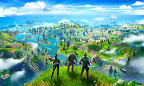
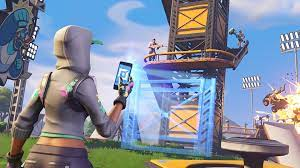
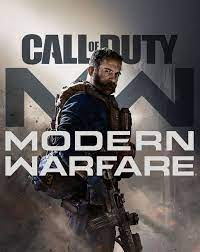

FIFA

¿Qué es el FIFA?
FIFA es una saga de videojuegos de fútbol publicados anualmente por Electronic Arts bajo el sello de EA Sports creado en Japon
La saga comenzó a finales de 1993, destacó por ser el primero en tener una licencia oficial de la FIFA.
Las últimas ediciones de la saga contienen muchas licencias exclusivas y los equipos de ligas de todo el mundo, lo que permite:
- El uso real de los estadios
- Cánticos del público
- Nombres reales de los jugadores y sus semejanzas en cómo juegan dentro del campo.


¿Cuánta gente lo juega?

Hay un total de 265 millones de personas en todo el mundo que jueguen al FIFA
Fortnite
¿Qué es el Fortnite?
Fortnite es un videojuego del año 2017 desarrollado por la empresa Epic Games lanzado como diferentes paquetes de software que presentan diferentes modos de juego, pero que comparten el mismo motor de juego y mecánicas.
Los modos de juego publicados en 2017 incluyen Fortnite:
Battle Royale
Salvar el mundo
Modos de juego
Salvar el mundo
-
Battle Royale
-
Modo creativo


Está diseñado como un juego de jugador contra entorno, con cuatro jugadores que cooperan para alcanzar un objetivo común en varias misiones. El juego se desarrolla después de que una tormenta mortal aparece en toda la Tierra, provocando que el 98% de la población desaparezca y los sobrevivientes sean atacados por zombis. Los jugadores asumen el papel de comandantes de refugios tipo base, recogen recursos, salvan sobrevivientes y defienden equipos que ayudan a recopilar datos sobre la tormenta o a hacer retroceder la tormenta.

Es un juego de tipo batalla real en el que compiten hasta cien jugadores en solitario, duos, trios o escuadrones. Los jugadores saltan de un autobús que cruza el mapa en el momento que deseen, y empiezan sin armas. Cuando aterrizan, deben buscar armas, objetos útiles y recursos, evitando que los maten mientras atacan a otros jugadores. La acción se divide en rondas con una duración determinada. Al acabar cada ronda, el área segura del mapa se reduce en tamaño debido a una tormenta en ciernes; los jugadores que están fuera de esa área segura reciben daño y pueden morir a causa de ella. Esto obliga a los jugadores a estar en espacios cada vez más cerrados y fomenta los combates entre jugadores. El último jugador o escuadrón vivo es el ganador de la partida.
Es un modo en el cual el jugador puede construir su propia isla con amigos de la forma en la que ellos deseen. En este modo hay estructuras predeterminadas para facilitar el trabajo de la construcción además de piezas adicionales solo disponibles en ese modo de juego.
Estos modos de juego le dan la posibilidad al jugador de usar un pico para derribar estructuras existentes en el mapa para recolectar recursos básicos, a partir de los cuales pueden construir piezas de fortificación, como paredes, escaleras, suelos y conos. Tales piezas de fortificación se pueden editar para incluir otras características, como ventanas o puertas.
Los materiales utilizados tienen diferentes propiedades de durabilidad y se pueden actualizar a variantes más fuertes utilizando más materiales del mismo tipo.
Call of Duty
¿Qué es el Call of Duty?
Call of Duty es una serie de videojuegos de disparos en primera persona, de estilo bélico, desarrollada principal e inicialmente por Infinity Ward, Treyarch, Sledgehammer Games y en menor proporción Raven Software y distribuida por Activision. La franquicia comenzó para computadora personal y posteriormente fue expandiéndose hacia videoconsolas de sexta y séptima generación.
Principales juegos

- Call of Duty: Es el primer título de la franquicia, que además se llamó como la serie, y fue lanzado para las videoconsolas de sexta generación.
- Call of Duty: Modern Warfare 2: Es la sexta entrega de la serie Call of Duty y sucesora directa de Modern Warfare, cuarta de la serie.
- Call of Duty: Black Ops: Es el séptimo título de la serie Call of Duty, el séptimo de la misma en ser título principal, y el tercer título de la serie desarrollado por Treyarch, siendo la secuela directa del anterior título.
- Call of Duty: Modern Warfare 3: Precedido por Call of Duty: Black Ops y secuela directa de Call of Duty: Modern Warfare 2, es el octavo título principal de la serie Call of Duty.
- Call of Duty: Black Ops 2: Es el noveno juego de la saga Call of Duty y una secuela del juego de 2010 Call of Duty: Black Ops.
- Call of Duty: Black Ops 3: Es la decimosegunda entrega de la saga Call of Duty y la secuela del videojuego de 2012 Call of Duty: Black Ops 2. Fue lanzado el 6 de noviembre de 2015. Desarrollado por Treyarch para PlayStation 3, PlayStation 4, Xbox One y PC.
- Call of Duty: WWII: Es la decimocuarta entrega de la saga. Un videojuego desarrollado por Sledgehammer Games, distribuido por Activision. Esta entrega vuelve a las raíces de la saga en la Segunda Guerra Mundial.